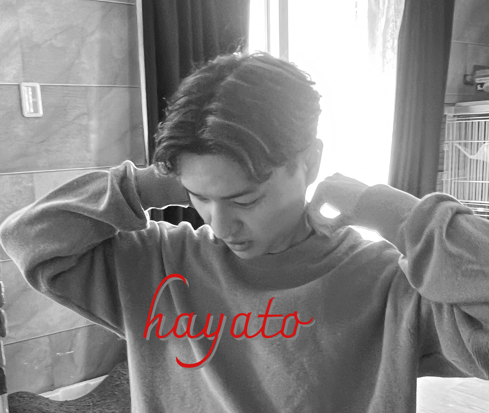

丁寧に、着実に。 小さな一歩を、 大きな成長へ。
一つひとつの作業に真摯に向き合い、焦らず、着実に積み重ねていくことを大切にしています。
小さな努力や学びも、やがて大きな成長へとつながると信じています。
その思いを、「丁寧に、着実に。小さな一歩を、大きな成長へ。」という言葉に込めました。
経歴
高等学校卒業後、自動車関連の製造業に就職。
慣れない作業に戸惑いながらも、先輩や上司の方々から多くのアドバイスをいただき、日々の業務に取り組んでいました。
2年目以降は資格取得を通して任せていただける業務も増え、機械製造の現場で“ものづくり”の楽しさや、目標を達成する喜びを実感しました。
1月に組立工程から機械加工の業務へ異動。
組立とは異なり、機械によるプログラムの呼び出しや加工後の処理など、新たなスキルを学ぶ機会となりました。
日々の業務を通して「もっと多くの経験を積みたい」と感じ、9月中旬に退職。
その後は派遣社員として働きながら、かねてより興味のあったWebサイト制作への理解を深めるため、Webデザインの勉強を開始しました。
1月より飲食関係の製造業務に従事しながら、Webデザインの学習を継続。
実務経験とは異なる分野への挑戦でしたが、前職で培った行動力や好奇心を活かし、学びを深めてきました。
1月に飲食製造関係の仕事を離れ、IT企業に就職。
経験が少ない中での挑戦ですが、これまでの社会人経験や学習の積み重ねを活かし、新たな環境でも丁寧に業務に取り組んでいます。
スキル
Projects
Hobbies
写真 / 音楽制作 / ゲーム